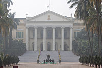

|
|
British administrative offices
Facade of the Calcutta High Court
Calcutta High Court - It is the oldest High Court in India. It was established as the High Court of Judicature at Fort William on 1 July 1862 under the High Courts Act, 1861. It has jurisdiction over the state of West Bengal and the Union Territory of the Andaman and Nicobar Islands. The High Court building is an exact replica of the Stand Haus in Ypres, Belgium. It is recorded that when the original Stand Haus burnt down, a blue print of Granville's Calcutta High Court had to be consulted before rebuilding it. The court has a sanctioned judge strength of 63. Despite the name of the city having officially changed from Calcutta to Kolkata in 2001, the old name is retained by the court as it is an institution.

Facade of the Raj Bhawan, Kolkata
Raj Bhavan (Government House) - It was built in the early 19th century, is modelled on Kedleston Hall. The House was once the seat of the Viceroys of India; later, when the Government moved to New Delhi, it became the residence of the Governor of Bengal, a function that it fulfills to this day. While the basic features of Kedleston have been faithfully copied (the Palladian Front, the Dome etc.), Government House is a much larger, three storeyed structure. Also, the Government of India evidently did not have the funding constraints that forced the Curzons to leave their house incomplete: Government House has all four wings originally conceived for Kedleston. So today, a 'complete', brick built Kedleston, on a much grander scale, is located in its acres of gardens at the heart of the Kolkata business district.
Town Hall
Town Hall - In Roman-Doric style, this building was built by the architect Col. John Garstin in 1813 with a fund of Rupees seven lakhs raised from lottery to provide the Europeans with a place for social gatherings. At first, the hall was placed under a committee, which allowed the public to use the hall under such terms and conditions as were fixed by the Government. The public could visit the ground floor hall to see statues and large size portrait paintings but they were not allowed indiscriminate access to the upper storey. Applications for the use of the upper storey were to be made to the committee. In 1867 Town Hall came under the custody of the Calcutta Municipality (later on Kolkata Municipal Corporation). In the year of 1897 the Town Hall had been partly renovated. After political independence in 1947, Indiscriminate interference with the structure inevitably took its toll. That, at last, has been prevented in 1998 by timely intervention. The town hall was featured on the 6th leg of The Amazing Race 18, when the teams had to compete in a tea-drinking roadblock.

A panoramic view of Writer's Building in Central Kolkata
Writers' Building - It is the secretariat building of the State Government of West Bengal in India. Today it houses the office of the Chief Minister of West Bengal. It is and is located in West Bengal's capital city of Kolkata. The Writers' Building originally served as the office for writers of the British East India Company, hence the name. Designed by Thomas Lyon in 1777 the Writers' uilding has gone through several extensions over the years. In 1821 128 long verandah with ionic columns, each 32 feet high, were added on the first and second floor. In 1821 A 128 ft-long verandah with Ionic style columns, each 32 ft high, were added on the first and second floors. From 1889 to 1906 two new blocks were added, approached by iron staircases that are still in use. Writers� acquired its Greco-Roman look, complete with the portico in the central bay and the red surface of exposed brick. The parapet was put in place and the statues sculpted by William Fredric Woodington in 1883, that line the terrace, were installed. The giant pediment at the centre is crowned with the statue of Minerva. The terrace also contains several other statues and notable among them are four clusters of statues, christened 'Justice', 'Commerce', 'Science' and 'Agriculture', with the Greek Gods and Goddesses of these four streams (Zeus, Hermes, Athena and Demeter respectively) flanked by a European and an Indian practitioner of these vocations, adorn the building. The 150 meter long Writers' Building covers the entire northern stretch of the a water body locally called Lal Dighi in B.B.D. Bagh area. Various departments of the West Bengal government are housed in this building. It is an edifice of great political significance and memories of the Indian Independence Movement. Writer's building is now being used as Chief Minister's Office and secretariat.
The General Post Office (GPO) in Kolkata
General Post Office - It is the central post office of the city of Kolkata, India and the chief post office of West Bengal. The post-office handles most of the city's inbound and outbound mail and parcels. Situated in the B.B.D. Bagh area, the imposing structure of the GPO is one of the landmarks in the city.
go to top
Home
Developed by SUGATO CHAKRABORTY (currently pursuing B.Tech in CSE from West Bengal University of Technology, developer at Boscom Software,2014)
|
|